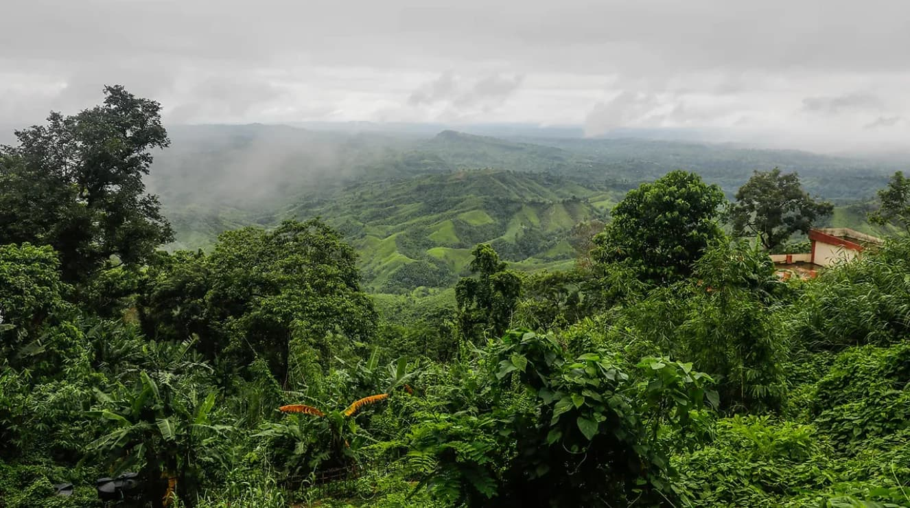
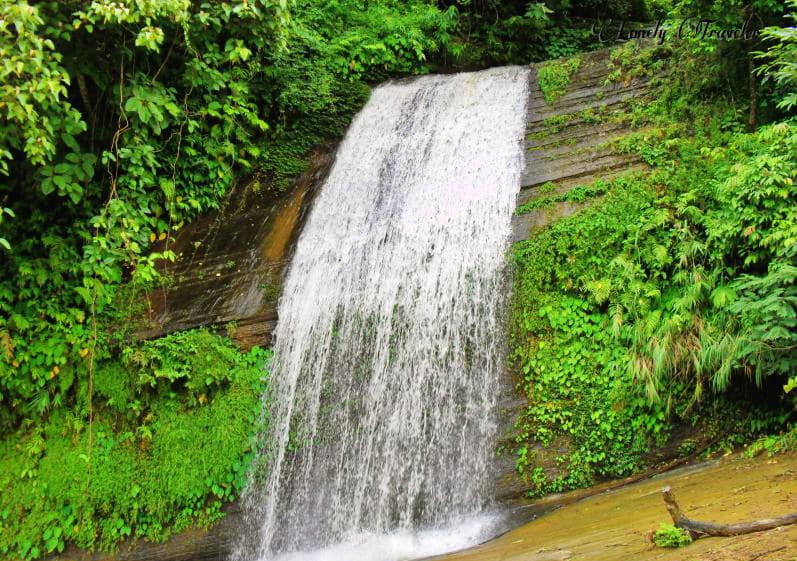
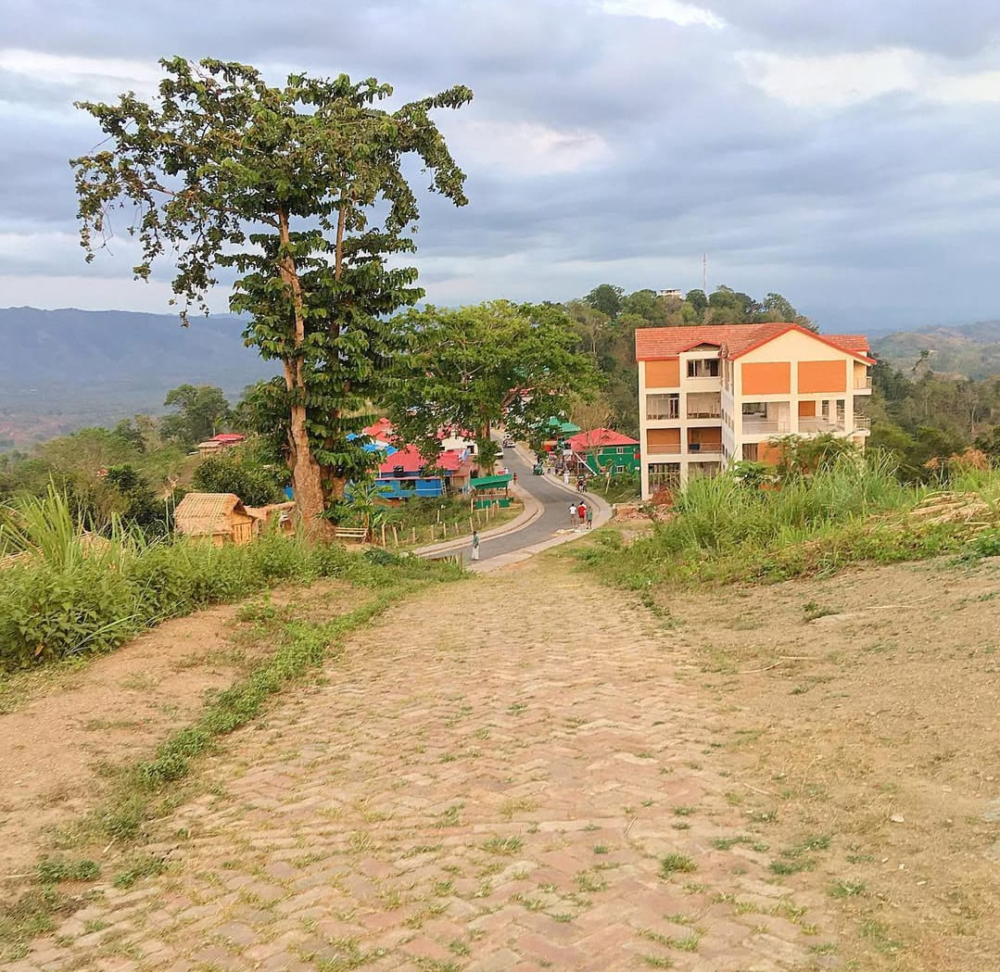
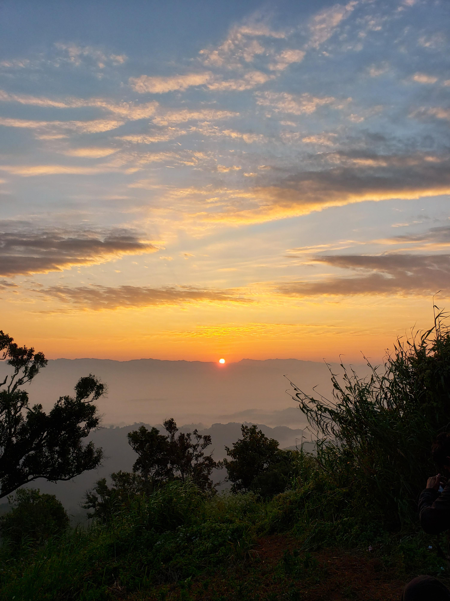

Top Tourist Attractions
Konglak Hill

A serene hilltop offering spectacular views of the surrounding valleys and an ideal spot for nature lovers.
Risang Waterfall

A breathtaking waterfall surrounded by lush greenery, providing a perfect setting for relaxation and photography.
Helipad

The Helipad offers a unique aerial view of Sajek, allowing visitors to enjoy the beauty of the valley from above.
Stone Garden

A unique landscape filled with large, beautiful stones and rocks, perfect for hiking and exploration.
Sajek Viewpoint

The most famous viewpoint in Sajek, offering mesmerizing views of the hills and valleys, especially at sunrise and sunset.
Sajek River

A peaceful river winding through the mountains, perfect for a tranquil boat ride and nature immersion.